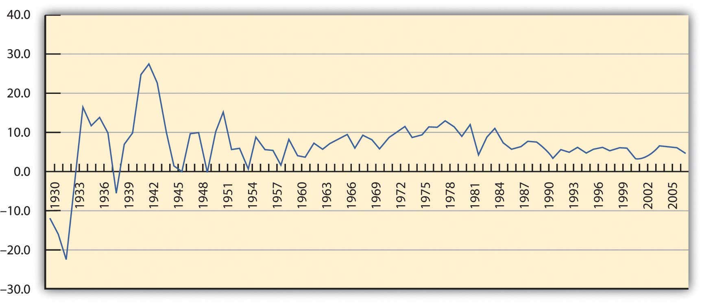
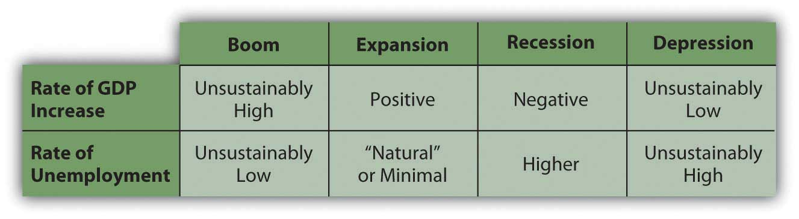
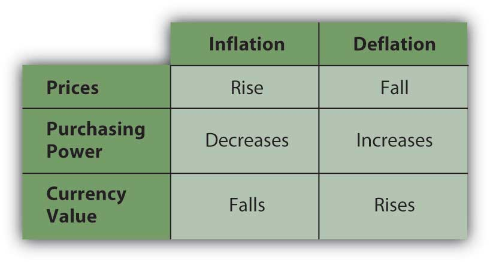
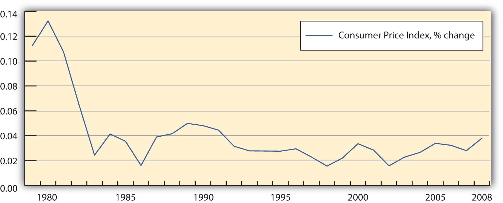

Financial planning has to take into account conditions in the wider economy and in the markets that make up the economy. The labor marketWhere labor is traded through hiring or employment and price is determined by the interaction of employers and employees., for example, is where labor is traded through hiring or employment. Workers compete for jobs and employers compete for workers. In the capital marketA market where long-term liquidity is traded., capital (cash or assets) is traded, most commonly in the form of stocks and bonds (along with other ways to package capital). In the credit marketA part of the capital market where capital is lent and borrowed through the trading of debt securities such as bonds., a part of the capital market, capital is loaned and borrowed rather than bought and sold. These and other markets exist in a dynamic economic environment, and those environmental realities are part of sound financial planning.
In the long term, history has proven that an economy can grow over time, that investments can earn returns, and that the value of currency can remain relatively stable. In the short term, however, that is not continuously true. Contrary or unsettled periods can upset financial plans, especially if they last long enough or happen at just the wrong time in your life. Understanding large-scale economic patterns and factors that indicate the health of an economy can help you make better financial decisions. These systemic factors include, for example, business cycles and employment rates.
An economy tends to be productive enough to provide for the wants of its members. Normally, economic output increases as population increases or as people’s expectations grow. An economy’s output or productivity is measured by its gross domestic productThe total value of all final goods and services produced in a year in a nation’s economy. It is used as a fundamental measure of an economy’s growth based on its ability to use resources productively and provide for its members. or GDP, the value of what is produced in a period. When the GDP is increasing, the economy is in an expansion, and when it is decreasing, the economy is in a contraction. An economy that contracts for half a year is said to be in recessionA period of economic contraction lasting at least six consecutive months or two consecutive quarters.; a prolonged recession is a depressionA prolonged and severe recession.. The GDP is a closely watched barometer of the economy (see Figure 1.4 "GDP Percent Change (Based on Current Dollars)").
Figure 1.4 GDP Percent Change (Based on Current Dollars)Based on data from the Bureau of Economic Analysis, U.S. Department of Commerce, http://www.bea.gov/national/ (accessed November 21, 2009).
Over time, the economy tends to be cyclical, usually expanding but sometimes contracting. This is called the business cycleRecurring periods of economy-wide expansion, when the economy is growing, and contraction, when the economy is shrinking. Cycles are often measured by the increase or decrease in the GDP.. Periods of contraction are generally seen as market corrections, or the market regaining its equilibrium, after periods of growth. Growth is never perfectly smooth, so sometimes certain markets become unbalanced and need to correct themselves. Over time, the periods of contraction seem to have become less frequent, as you can see in Figure 1.4 "GDP Percent Change (Based on Current Dollars)". The business cycles still occur nevertheless.
There are many metaphors to describe the cyclical nature of market economies: “peaks and troughs,” “boom and bust,” “growth and contraction,” “expansion and correction,” and so on. While each cycle is born in a unique combination of circumstances, cycles occur because things change and upset economic equilibrium. That is, events change the balance between supply and demand in the economy overall. Sometimes demand grows too fast and supply can’t keep up, and sometimes supply grows too fast for demand. There are many reasons that this could happen, but whatever the reasons, buyers and sellers react to this imbalance, which then creates a change.
An economy produces not just goods and services to satisfy its members but also jobs, because most people participate in the market economy by trading their labor, and most rely on wages as their primary source of income. The economy therefore must provide opportunity to earn wages so more people can participate in the economy through the market. Otherwise, more people must be provided for in some other way, such as a private or public subsidy (charity or welfare).
The unemployment rateA measure of the percentage of people in the labor force who are unemployed, that is, those who would like to be working but cannot find a suitable job. is a measure of an economy’s shortcomings, because it shows the proportion of people who want to work but don’t because the economy cannot provide them jobs. There is always some so-called natural rate of unemployment as people move in and out of the workforce as the circumstances of their lives change—for example, as they retrain for a new career or take time out for family. But natural unemployment should be consistently low and not affect the productivity of the economy.
Unemployment also shows that the economy is not efficient, because it is not able to put all its productive human resources to work.
The employment rateA measure of the rate of labor force participation, or the percentage of the labor force that is employed, that is, people who want to work and are working., or the participation rate of the labor force, shows how successful an economy is at creating opportunities to sell labor and efficiently using its human resources. A healthy market economy uses its labor productively, is productive, and provides employment opportunities as well as consumer satisfaction through its markets. Figure 1.6 "Cyclical Economic Effects" shows the relationship between GDP and unemployment and each stage of the business cycle.
Figure 1.6 Cyclical Economic Effects
At either end of this scale of growth, the economy is in an unsustainable position: either growing too fast, with too much demand for labor, or shrinking, with too little demand for labor.
If there is too much demand for labor—more jobs than workers to fill them—then wages will rise, pushing up the cost of everything and causing prices to rise. Prices usually rise faster than wages, for many reasons, which would discourage consumption that would eventually discourage production and cause the economy to slow down from its “boom” condition into a more manageable rate of growth.
If there is too little demand for labor—more workers than jobs—then wages will fall or, more typically, there will be people without jobs, or unemployment. If wages become low enough, employers theoretically will be encouraged to hire more labor, which would bring employment levels back up. However, it doesn’t always work that way, because people have job mobility—they are willing and able to move between economies to seek employment.
If unemployment is high and prolonged, then too many people are without wages for too long, and they are not able to participate in the economy because they have nothing to trade. In that case, the market economy is just not working for too many people, and they will eventually demand a change (which is how most revolutions have started).
Other economic indicators give us clues as to how “successful” our economy is, how well it is growing, or how well positioned it is for future growth. These indicators include statistics, such as the number of houses being built or existing home sales, orders for durable goods (e.g., appliances and automobiles), consumer confidence, producer prices, and so on. However, GDP growth and unemployment are the two most closely watched indicators, because they get at the heart of what our economy is supposed to accomplish: to provide diverse opportunities for the most people to participate in the economy, to create jobs, and to satisfy the consumption needs of the most people by enabling them to get what they want.
An expanding and healthy economy will offer more choices to participants: more choices for trading labor and for trading capital. It offers more opportunities to earn a return or an income and therefore also offers more diversification and less risk.
Naturally, everyone would rather operate in a healthier economy at all times, but this is not always possible. Financial planning must include planning for the risk that economic factors will affect financial realities. A recession may increase unemployment, lowering the return on labor—wages—or making it harder to anticipate an increase in income. Wage income could be lost altogether. Such temporary involuntary loss of wage income probably will happen to you during your lifetime, as you inevitably will endure economic cycles.
A hedge against lost wages is investment to create other forms of income. In a period of economic contraction, however, the usefulness of capital, and thus its value, may decline as well. Some businesses and industries are considered immune to economic cycles (e.g., public education and health care), but overall, investment returns may suffer. Thus, during your lifetime business cycles will likely affect your participation in the capital markets as well.
Stable currency value is another important indicator of a healthy economy and a critical element in financial planning. Like anything else, the value of a currency is based on its usefulness. We use currency as a medium of exchange, so the value of a currency is based on how it can be used in trade, which in turn is based on what is produced in the economy. If an economy produces little that anyone wants, then its currency has little value relative to other currencies, because there is little use for it in trade. So a currency’s value is an indicator of how productive an economy is.
A currency’s usefulness is based on what it can buy, or its purchasing powerA currency’s usefulness and thus its value as measured by how much it can buy, that is, the quantity of goods and services that can be purchased with one unit of currency.. The more a currency can buy, the more useful and valuable it is. When prices rise or when things cost more, purchasing power decreases; the currency buys less and its value decreases.
When the value of a currency decreases, an economy has inflationPeriod characterized by rising prices, declining purchasing power, and lower currency values (one unit of currency is worth less because it buys a smaller quantity of goods and services).. Its currency has less value because it is less useful; that is, less can be bought with it. Prices are rising. It takes more units of currency to buy the same amount of goods. When the value of a currency increases, on the other hand, an economy has deflationPeriod characterized by falling prices, increasing purchasing power, and higher currency values (one unit of currency is worth more because it buys a greater quantity of goods and services).. Prices are falling; the currency is worth more and buys more.
For example, say you can buy five video games for $20. Each game is worth $4, or each dollar buys ¼ of a game. Then we have inflation, and prices—including the price of video games—rise. A year later you want to buy games, but now your $20 only buys two games. Each one costs $10, or each dollar only buys one-tenth of a game. Rising prices have eroded the purchasing power of your dollars.
If there is deflation, prices fall, so maybe a year later you could buy ten video games with your same $20. Now each game costs only $2, and each dollar buys half a game. The same amount of currency buys more games: its purchasing power has increased, as has its usefulness and its value (Figure 1.7 "Dynamics of Currency Value").
Figure 1.7 Dynamics of Currency Value
Inflation is most commonly measured by the consumer price indexA measure of inflation or deflation based on a national average of prices for a “basket” of common goods and services purchased by the average consumer. (CPI), an index created and tracked by the federal government. It measures the average nationwide prices of a “basket” of goods and services purchased by the average consumer. It is an accepted way of tracking rising or falling price levels, indicative of inflation or deflation. Figure 1.9 "Inflation, 1979–2008" shows the percent change in the consumer price index as a measure of inflation during the period from 1979 to 2008.
Figure 1.9 Inflation, 1979–2008Based on data from the Bureau of Labor Statistics, U.S. Department of Labor, http://www.bls.gov (accessed November 21, 2009).
Currency instabilities can also affect investment values, because the dollars that investments return don’t have the same value as the dollars that the investment was expected to return. Say you lend $100 to your sister, who is supposed to pay you back one year from now. There is inflation, so over the next year, the value of the dollar decreases (it buys less as prices rise). Your sister does indeed pay you back on time, but now the $100 that she gives back to you is worth less (because it buys less) than the $100 you gave her. Your investment, although nominally returned, has lost value: you have your $100 back, but you can’t do as much with it; it is less useful.
If the value of currency—the units in which wealth is measured and stored—is unstable, then investment returns are harder to predict. In those circumstances, investment involves more risk. Both inflation and deflation are currency instabilities that are troublesome for an economy and also for the financial planning process. An unstable currency affects the value or purchasing power of income. Price changes affect consumption decisions, and changes in currency value affect investing decisions.
It is human nature to assume that things will stay the same, but financial planning must include the assumption that over a lifetime you will encounter and endure economic cycles. You should try to anticipate the risks of an economic downturn and the possible loss of wage income and/or investment income. At the same time, you should not assume or rely on the windfalls of an economic expansion.
In addition to GDP, measures of the health of an economy include
Thus, personal financial planning should take into account
Brainstorm with others taking this course on effective personal financial strategies for